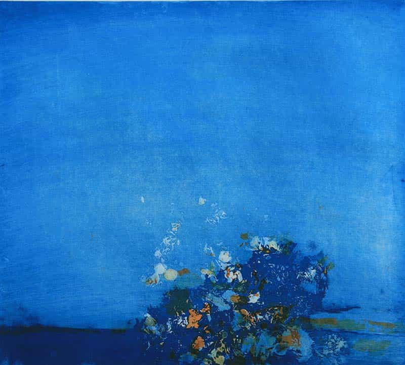
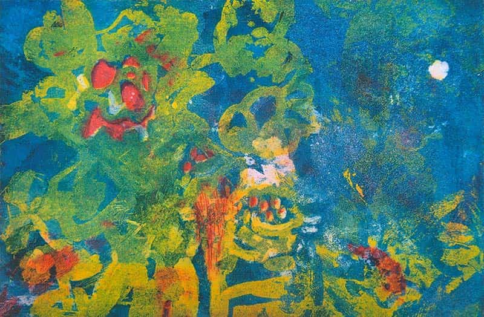

Museo Nino Cordio di Santa Ninfa
La collezione del Museo Nino Cordio di Santa Ninfa contiene quasi 200 opere.
galleria
biografia
 Le foto, recuperate dalla casa della nonna distrutta dal terremoto, riguardano gli anni della fanciullezza vissuta a Santa Ninfa con la madre, i due fratelli maggiori e il gemello Salvatore. Il padre, intanto, è prigioniero in Africa. Sono anni difficili, intensi e nello stesso tempo cari e carichi di emozioni e di sensazioni. Il momento è straordinario, il più significativo per la formazione dell'uomo e dell'artista.
Le foto, recuperate dalla casa della nonna distrutta dal terremoto, riguardano gli anni della fanciullezza vissuta a Santa Ninfa con la madre, i due fratelli maggiori e il gemello Salvatore. Il padre, intanto, è prigioniero in Africa. Sono anni difficili, intensi e nello stesso tempo cari e carichi di emozioni e di sensazioni. Il momento è straordinario, il più significativo per la formazione dell'uomo e dell'artista.
Leggi tutto
news
per i più piccoli

Nato a Santa Ninfa, in provincia diTrapani, il 10 luglio 1937.
Ha studiato all'Istituto d'Arte di Catania e all'Accademia di Belle Arti di Roma. Successivamente ha frequentato l'Atelier di Friedländer a Parigi.
Ha insegnato presso il I Liceo Artistico di Roma e presso la International School of Art in Umbria.
Leggi tutto
testimonianze

Nato a Santa Ninfa, in provincia diTrapani, il 10 luglio 1937.
Ha studiato all'Istituto d'Arte di Catania e all'Accademia di Belle Arti di Roma. Successivamente ha frequentato l'Atelier di Friedländer a Parigi.
Ha insegnato presso il I Liceo Artistico di Roma e presso la International School of Art in Umbria.
Leggi tutto